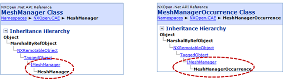
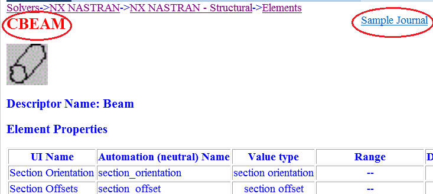

There are two key documentation resources that you will need to use when you create applications with NX Open for CAE:
The NX Open API documentation.
The NX Open for CAE documentation.
Both of these resources can be found in the Programming Tools documentation within the NX Help Library.
The general NX Open API documentation provides information on all classes for each of the major programming languages (for example, .NET, Java, C++).
For example, NX Help Library→Programming Tools→NX Open→Open for .NET→NX Open for .NET Reference Guide provides a complete API reference for NX Open for .NET in Microsoft Compiled Help (.chm) format. You may find this documentation especially helpful for this course.
|
Note |
The CAE classes are found in the NXOpen.CAE namespace. |
The documentation for each class includes:
A short description of the class.
A list of the members of that class, including the available properties and methods.
Remarks, which can contain information on how to create an instance of the class.
An instance hierarchy, which displays the predecessors that the class inherits from. This is useful for finding the interface classes, which are common in the NX CAE data model.
For example, notice how the MeshManager and MeshManagerOccurrence classes share the same interface class:

The NX Open for CAE documentation supplements the general NX Open API documentation. It includes documentation for the CAE Solver Environment (solver languages) and on the meshing technologies supported by the NX CAE applications.
You can find it at: NX Help Library→Programming Tools→NX Open→Open for CAE.
In the Solver Environment section, for each supported solver, the documentation lists all supported entities and includes:
The language-specific name and the name that appears in the user interface. Sometimes these names are the same, and sometimes they are different. Additionally, the name you need to provide in NX Open for CAE applications is not consistent. Therefore, the name required by NX Open for CAE is shown in red.
a link to sample JA code, which demonstrates correct coding for each entity.
The following graphic shows an example of the documentation for the NX Nastran CBEAM element. In this case, CBEAM is both the name that appears in the NX user interface and the name you need to provide to NX Open.

When you create NX Open for CAE applications, you will need to use both of these documentation resources. For example, suppose you wanted to create an application that would generate a mesh of 2D elements. You would:
Consult the NX Open API documentation for information on how to use the NXOpen::CAE::ElementCreateBuilder class.
Consult the NX Open for CAE for information on the supported element types for a given solver.
The NX Help Library provides complete documentation for tools you can use to customize NX and to automate NX workflows. You may find these additional help topics useful:
NX Help Library→Programming Tools→NX Open→NX Open Programmer's Guide introduces the topics that are typically encountered when developing automation solutions for NX using the NX Open toolkits.
NX Help Library→Programming Tools→Block UI Styler provides complete online Help for the Block UI Styler application, which you can use to interactively build dialog boxes that are consistent with the NX block-based user interface.
NX Help Library→Fundamentals→Customizing NX→Customizing your environment→Customizing toolbars and menus provides information about adding applications to toolbars and menus.
There are a number of examples of Visual Basic programs which use NX Open to perform NX Advanced Simulation operations. These examples are located on the NX product installation disc in this folder: %UGII_BASE_DIR%\ugopen\SampleNxOpenApplications\.NET\CAE.